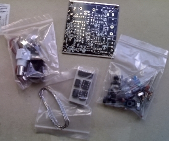
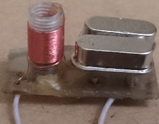

Набор для самостоятельного изготовления CW QRP трансивера.
На сайте украинского радиолюбителя UY2RA попалась на глаза его
статья о QRP CW наборе Splinter
II,
который предлагают по цене $62,95 USD для стран Европы и Азии.
Стоимость данного
набора мне показалась явно завышенной (по отношению к
моей зарплате), поэтому я обратился к поисковой системе Яндекса и
узнал, что на сайте китайского интернет-магазина
Aliexpress предлагают большое количество наборов для самостоятельного
изготовления CW QRP трансивера прямого преобразования
«PIXIE» на диапазон 7 МГц.

Схемотехника этих наборов является усовершенствованием CW QRP
трансивера
«Micro-80» российского радиолюбителя
RV3GM.
Остановил
свой выбор на Electronic
2014 new The ultimate version of the CW 7.023 radio short-wave radio
transmitter-receiver telegraph DIY Frogs suite. Набор
выпускает фирма
IndoWare Electronics и предназначен он для сборки трансивера прямого
преобразования 40 метрового диапазона.
Основные характеристики:
Электропитание: 9 В-12 В (рекомендуется 12-ти вольтовый линейный
регулируемый источник питания).
Антенна: 50 Ом, несеметричная.
Мощность передачи: 2 Вт (9 В питания), 3 Вт (12 В питания)
Частота: стабилизирована кварцем: 7023 KHz; возможность получения
растройки: около 7023-7026 KHz.
Режим работы: CW
Трансивер выполнен по схеме прямого преобразования на двух микросхемах
NE602 (гетеродин и смеситель) и LM386 (УНЧ), на микросхеме 74HC00
собран генератор самоконтроля, на 78L06 - стабилизатор питания.
Выходной каскад передатчика выполнен по схеме с ОЭ на двух
транзисторах:
8050 с коэффициентом усиления около 130 и D882 с коэффициентом усиления
около 200.
Принимаемый сигнал с антенны, через ФНЧ передатчика поступает на
аттенюатор, выполненном на переменном резисторе 4,7 кОм,
далее через входной фильтр приёмника, выполненном на кварцевом
резонаторе, поступает на вход микросхемы NE602.
Во время работы на передачу вход приёмника через диод типа 1N4148
закорачивается на корпус.
Не нужно предъявлять к аппарату этого класса необоснованных претензий.
Изменив номиналы кварцевых резонаторов и элементов П-контура, его легко
перестроить на любой другой радиолюбительский диапазон.
Данный набор является модернизацией трансивера прямого
преобразования «Forty-9er»
радиолюбителя
Уэйна Бёрдика N6KR из NorCal QRP club, изменениям подверглась входная
часть приёмника и выходной каскад передатчика, добавлен генератор
самоконтроля, индикатор "приём-передача".
Набор
пришёл в течении двух месяцев, в комплекте находился припой и проволка
для намотки контуров. Сборка трансивера не составила большого
труда, так как на печатной плате нанесены соответствующие обозначения.
Советую пользоваться перечнем элементов и устанавливать радиодетали
согласно их расположению на печатной плате, имелись небольшие отличия в
обозначении
радиодеталей на принципиальной
схеме и печатной плате. В качестве
элемента расстройки вместо диода 1N4001, имеющего ёмкость 18 пФ,
производитель советует использовать варикап с ёмкостью до 100
пФ.
Я использовал имеющийся у меня варикап КВ132АР ёмкостью 26.4 - 39.6 пФ,
который используется в ЧМ трактах приёмо-усилительной аппаратуры.
Перестройка по частоте составила 1.85 кГц
Если Вы планируете в дальнейшем поводить модернизацию собранного
трансивера, кварц желательно установить в гнездовые разъёмы,
а
подстроечный резистор W2 заменить на
многооборотный резистор и подключить его проводами к соответствующим
контактам на плате.
Сначала я установил микросхемы стабилизатора напряжения, УНЧ и
логическую микросхему 74HC00, транзистор 2N7000, разъёмы для
подключения питания, наушников и телеграфного ключа, обвязывающие
конденсаторы и резисторы.
После сборки я подключил питание, проверил напряжение на выходе
микросхемы стабильзатора.
Подключив наушники и телеграфный ключ проверил работу УНЧ. После
нажатия на ключ можно прослушать работу генератора самоконтроля.
Подбором конденсатора C7 можно установить желаемый тон звучания.
Отключив питание, продолжил дальнейшую сборку трансивера.
Выходная мощность оказалась немного больше 1 Вт при напряжении питания 13.6 В.
Некоторые зарубежные радиолюбители, собиравшие этот трансивер советуют
уменьшить количество витков катушки L5 выходного контура передатчика до
14 — 15 витков, катушки L4 в цепи питания выходного транзистора: 7 — 8
витков.
Трансивер чуствителен к пульсациям по питанию, запитывать его удобно от
12 вольтовых аккумуляторных батарей, используемых в источниках
бесперебойного питания.

Проверив работоспособность трансивера, я изменил задающий генератор,
собрав его по схеме "Супер VXO",
подключив последовательно с двумя кварцевыми резонаторами дроссель на
10 мкГн, что обеспечило
расстройку по частоте более 4 кГц. Всё это я разместил на отдельной
плате, соединив проводами с точками на плате, где должен располагаться
кварц Y2.
Существует много доработок и модификаций CW QRP трансивера, так что
можно, как из кубиков, собирать как простую, так и более сложную
модификацию, либо модернизировать уже имеющуюся.
Кварцевые резонаторы на частоту 7.03 МГц можно приобрести здесь.
P.S. На сайте http://lxqqfy.com я увидел модернизацию данного трансивера:
- добавлен модуль WiFi, совместно с мобильным приложением для Android , загружаемого с этого сайта, получаем автоматический телеграфный ключ с двумя банками памяти :)
- чтобы не спалить трансивер при неправильном подключении питания, установлен диодный мостик.
Владимир, EW7AS
Главная | О своём городе | Антенны | Радиосвязь на КВ | Радиосвязь на УКВ | Гостевая
Copyright © 2014 Сайт радиолюбителей г. Климовичи | Design studio «Zurbagan»